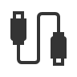
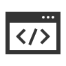

I began with a maintenance project for a database viewer using Java.
However, a software migration of a different project meant that I had to switch to a C# based user interaction update.
I had never used C# before but welcomed the challenge and was able to complete the task which included formal design review, implementation, and code review before merging with main.
This was a great opportunity for me to practice tracing other people's code and learn the importance of documentaiton at every step of the development process.
Some software used:
- Jira for task management
- VS code
- BitBucket for git version control
- Jenkins for testing pipeline.

The primary project for the last 6 weeks of my internship was integration of an entirely new radio system on an unmanned aerial vehicle sensor processor software system in C++. I sent commands that set values like customized ip address, baud rate, power level, time, date.
Each mentioned command required following process:
- write to the serial port and change the radio into program mode
- reading from the serial port
- parse the resposne to confirm the radio mode
- send the appropiate command with careful mind to radio internal command line interface (CLI) syntax
- writing and reading to return to normal mode
- writing the test command and parsing the response read to ensure the relevant command was properly sent
There was a significant amount of testing involved to determine that all values were properly set and any issues could be fixed by the program if a certain command was not properly sent.
In my testing and refactoring stage I was able to improve the setup time by about 50% and remove thousands of lines of code. My code flew before the end of my internship.

2022 Texas A&M University Class Project
Create a custom Linux shell nicknamed "Aggie Shell" to complete the following by running commands as child processes:
- Basic commands
- Commands in pipeline
- File input/output redirection
- Multi piped commands with redirection
- Background processes
- Directory handling
Github link not available based on Aggie Honor Code that "An Aggie does not lie, cheat, or steal or tolerate those who do."